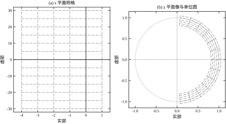
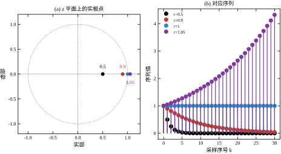
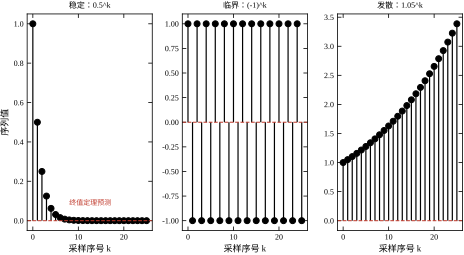
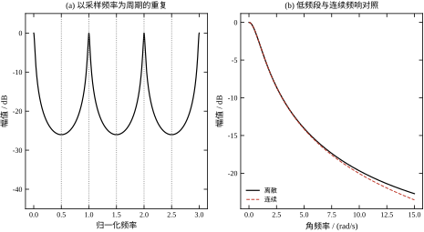
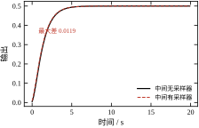

第 4 章把连续信号送进了数字世界，留下的最后一个问题是：进来之后怎么算。工程上最先写出来的往往不是传递函数，而是这样三行递推：
y[k] = 0.9048 * y[k-1] + 0.0952 * u[k-1];这段代码描述一个一阶惯性环节，采样周期 0.1 s，时间常数 1 s。它能跑，输出也像样，但围着它至少有五个问题答不上来：这两个系数为什么是 0.9048 和 0.0952？为什么输入要错开一拍？把采样周期改成 0.01 s，系数该变成多少？系统稳不稳定，看哪一个数？如果输入是 10 Hz 的正弦，输出衰减多少、滞后多少？
这五个问题分别指向 Z 变换的定义、移位性质、离散化公式、极点位置和频率响应。它们不是五个孤立的知识点，而是同一个对象的五个侧面。本章要做的，就是把这个对象——离散序列及其变换——建立成一套可以推导、可以计算、可以验证的语言。
先把话说清楚：Z 变换不是一个新的数学发明，它是拉普拉斯变换在采样序列上的特例。令 z=\mathrm{e}^{sT_s}，连续域的 s 就被映到了离散域的 z。这个替换看起来只是一次变量代换，实际上把整个左半平面卷成了一个单位圆盘，把无穷远的频率折进了一个有限区间。第 4 章讲过的混叠、周期延拓、半拍延迟，在 Z 变换里都会以新的形式再出现一次。
本章围绕三个问题展开，每个问题对应一组工具。
第一，一个序列的“频域”长什么样？ 连续信号用傅里叶变换看频谱，离散序列用什么看？答案是令 z=\mathrm{e}^{\mathrm{j}\omega T_s}，把 Z 变换在单位圆上取值。这样得到的频率响应以 \omega_s 为周期重复，正好对应第 4 章的频谱延拓。理解这一点，才能明白为什么数字滤波器的频响画到奈奎斯特频率就够，也才能明白为什么“提高采样率”和“改变滤波器”是两件不同的事。
第二，连续传函怎么变成脉冲传函？ 第 4 章给出了零阶保持的传递函数，但没有给出“连续对象加零阶保持再加采样器”这一整条链路的统一写法。脉冲传递函数就是这条链路的输入输出关系。它的难点不在推导，而在采样器的位置：两个连续环节串联，中间有采样器和没有采样器，得到的脉冲传函完全不同。这一点在连续域里不存在，是离散系统独有的陷阱。
第三，哪些连续域的定理可以直接搬？ 线性、移位、卷积这些性质可以搬，终值定理要加条件，微分定理要换形式，梅森增益公式要区分节点上有没有采样器。工程上大量错误来自“把连续域的结论原样搬到离散域”，本章会逐条标出哪些能搬、哪些不能、不能的原因是什么。
在展开定义之前，先看三个现象。它们都能用本章的工具解释，也都常被误读。
现象一：同一个代数式对应两个不同的序列。 X(z)=z/(z-0.5) 既可以表示因果序列 0.5^k u[k]，也可以表示反因果序列 -0.5^k u[-k-1]。两者的表达式一模一样，区别只在收敛域：前者要求 |z|>0.5，后者要求 |z|<0.5。若只写表达式不写收敛域，逆变换就没有唯一答案。连续域的拉普拉斯变换也有同样的问题，只是工程上绝大多数信号是因果的，这个区别被默认掉了；到了离散域，因果与反因果都可能是实际情形（比如非因果滤波、离线数据处理），不能再默认。
现象二：终值定理会给出一个看似合理的错答案。 对序列 (-1)^k，把 X(z)=z/(z+1) 代入终值定理，得到 (z-1)X(z) 在 z=1 处的值为 0。但 (-1)^k 在 \pm1 之间永远跳，根本没有终值。定理给出的 0 不是“近似值”，而是一个没有意义的数。原因在于终值定理要求 (z-1)X(z) 的极点全部在单位圆内，而 z=-1 正好在单位圆上。这个条件不满足时，公式照算不误，结果却完全错误——这是本章最危险的一类错误，因为它不报错、不溢出，只是安静地给出错数。
现象三：中间加一个采样器，串联传函就变了。 取两个一阶环节 1/(s+1) 与 1/(s+2)，采样周期 0.1 s。若两个环节之间没有采样器，合并后的脉冲传函分子是 0.004528z+0.004097；若中间有采样器，两个脉冲传函直接相乘，分子变成常数 0.008625。两者的直流增益都是 0.5，阶跃响应的最大差却达到 0.0131，占稳态值的 2.63\%。差别不出在稳态，出在动态：采样器把中间信号变成了阶梯，后续环节看到的不再是连续波形。在连续域里，“串联传函相乘”永远成立；在离散域里，它只在每个环节后面都有采样器时才成立。 这条规则是 §5.3.8 的主题，也是数字控制里最容易写错的一处。
本章的路线是从定义到工具，再到工程判断。
§5.2 建立定义：从 z=\mathrm{e}^{sT_s} 出发，给出单边 Z 变换、收敛域、常用变换对、逆变换三种算法，最后定义脉冲传递函数。§5.3 推导性质：线性、移位、卷积、初值与终值定理，然后讨论映射的几何、频率响应的周期性、串联规则。§5.4 落到实现：把 H(z) 写成差分方程，比较直接 I 型、直接 II 型与状态空间三种结构，用数值递推核对。§5.5 给出边界：哪些结论在什么条件下成立，五条边界逐条说明。§5.6 做验证：所有数字用脚本复核，并注入五个典型错误检验验证体系。§5.7 收束全章。
需要说明与相邻章的分工。采样定理、混叠机理、零阶保持的频响已在第 4 章建立，本章直接引用式 (4-5) 与式 (4-6)，不再重复推导。不同离散化映射（前向欧拉、后向欧拉、双线性、零极点匹配）的系统比较在第 6 章；离散系统的稳定性判据（Jury 判据、双线性变换后的 Routh 判据）在第 38 章；本章只给出“极点在单位圆内”这一条几何判据，不展开代数判据。矩阵形式的离散状态空间与数值计算在第 3、7 章；数字 PID 的实现细节在第 44 章；多速率系统与采样率切换在第 107 章；硬件层面的时钟与驱动在第 84–86 章。
一句话概括本章的定位：第 4 章回答“采样丢了什么”，本章回答“剩下的序列怎么算”。
连续域的传递函数建立在 s=\sigma+\mathrm{j}\omega 上，离散域没有 s，只有采样序号 k。两者之间的桥是一次指数映射：
z=\mathrm{e}^{sT_s}. \tag{5-1}
把 s=\sigma+\mathrm{j}\omega 代进去，实部与虚部分开：
\lvert z\rvert=\mathrm{e}^{\sigma T_s},\qquad \angle z=\omega T_s. \tag{5-2}
这两个式子把 s 平面的几何完整地搬到了 z 平面。虚轴 \sigma=0 映成单位圆，因为 \lvert z\rvert=1；左半平面 \sigma<0 映成单位圆内部；右半平面映成单位圆外部。等 \sigma 线（竖直线）映成以原点为圆心的圆，等 \omega 线（水平线）映成从原点出发的射线。图 5-1 画出了这张网格及其像。

图 5-1 s 平面网格（左）与它在 z 平面的像（右）。等实部线变成同心圆，等虚部线变成射线，虚轴变成单位圆。
映射不是一一的。指数函数以 \mathrm{j}2\pi/T_s 为周期，s 平面上宽度为 \omega_s=2\pi/T_s 的每条横带都映到同一个 z 平面。工程上只取主带 -\pi/T_s<\omega\le\pi/T_s，其余横带是它的重复，对应第 4 章的频谱延拓。这条性质解释了为什么离散频率响应只画到奈奎斯特频率：再往后的部分只是把主带又描了一遍。
数值上可以逐点核对。在左半平面随机取 1000 个点，映射后 \lvert z\rvert 的最大值是 0.999823，确实小于 1；右半平面 1000 个点的最小 \lvert z\rvert 是 1.000180，确实大于 1；虚轴上 1000 个点，\lvert\lvert z\rvert-1\rvert 的最大值只有 2.22\times10^{-16}，即双精度的舍入底。三组数分别验证了“左半平面进圆内、右半平面出圆外、虚轴落在圆上”。
对因果序列 x[k]，k=0,1,2,\dots，单边 Z 变换定义为
X(z)=\sum_{k=0}^{\infty}x[k]\,z^{-k}. \tag{5-3}
这是一个以 z^{-1} 为变量的幂级数。级数收敛的 z 的集合称为收敛域（ROC）。双边 Z 变换把求和下限改成 -\infty，本章除特别说明外都用单边定义，因为控制系统里的信号与脉冲响应都是因果的。
单边与双边只差一个求和下限，代价却不小。双边变换的求和从 k=-\infty 开始，能表示反因果序列与双边序列，收敛域是圆环；单边变换只累加 k\ge0 的部分，k<0 的信息被整体丢弃。对因果序列，两者给出同一个表达式；对反因果序列 x[k]=-0.5^{k}u[-k-1]，双边变换是 z/(z-0.5)、收敛域 |z|<0.5，而单边变换根本得不到这个结果：求和从 0 开始时序列全为零，级数恒等于零，与真实序列毫无关系。所以单边变换只能描述“从零时刻开始”的系统，不能用来分析反因果系统。
单边变换丢掉的那部分信息并没有凭空消失，它以初始项的形式回到移位性质里。对双边变换，\mathcal{Z}\{x[k-1]\}=z^{-1}X(z) 是干净的；对单边变换，
\mathcal{Z}\{x[k-1]\}=z^{-1}X(z)+x[-1],\qquad \mathcal{Z}\{x[k-2]\}=z^{-2}X(z)+z^{-1}x[-1]+x[-2].
多出来的 x[-1]、x[-2] 就是“零时刻之前的历史”。这解释了两件事。第一，为什么推导脉冲传函时必须声明零初始条件：若 x[-1]\ne0，输出的 Z 变换里会多出一项与输入无关的响应，Y(z)/U(z) 就不再是只由系统决定的函数。第二，为什么状态空间与传函在非零初值时给出不同结果：状态空间把初值显式放在 \boldsymbol{x}[0] 里，传函把它藏进了被约掉的项里，两者零初值时一致，非零初值时前者完整、后者残缺。
工程上的取舍很直接：在线控制系统只有当前与历史，单边变换够用，而且它的初始项正好对应“上电时积分器里残留多少”这类真实问题；离线数据处理、零相位滤波、图像处理会出现非因果运算，必须用双边变换。选错不会立刻报错，但收敛域的判断会整体错位——用单边的圆外收敛域去解释一个双边序列，得到的逆变换只是原序列的一半。
收敛域的形状由序列的“边”决定，只有三种可能：
收敛域里不能有极点。 极点是级数发散的位置，收敛域的边界一定经过极点（或延伸到无穷）。这条规则在逆变换时用来确定唯一的序列：给定 X(z) 的极点分布，选不同的收敛域，就得到不同的序列。
一个具体例子可以说明收敛域的决定作用。取 X(z)=z/(z-0.5)，极点在 0.5。若收敛域取 \lvert z\rvert>0.5，对应因果序列 0.5^k u[k]；若取 \lvert z\rvert<0.5，对应反因果序列 -0.5^k u[-k-1]。两者的代数表达式完全相同。数值上：在 z=2（圆外）处，因果级数的和为 1.333333333，与闭式 2/(2-0.5) 一致；在 z=0.25（圆内）处，反因果级数的和为 -1.000000000，与闭式 0.25/(0.25-0.5) 一致。若在 z=0.25 处硬用因果级数，公比是 0.5/0.25=2，前 30 项就已经累到 1.074\times10^{9}，明显发散。
还有两个容易忽略的细节。第一，有限长序列的收敛域是整个平面，因为求和只有有限项；只有在 z=0 或 z=\infty 处可能因为 z^{-k} 的负幂而失去定义。第二，若分子分母存在零极相消，化简后的收敛域可能比原来更大，但被消掉的极点对应的模态仍然存在于系统内部。收敛域是按未化简的表达式定的，不是按约分后的结果定的。 这一点与 §5.5.3 的第三条前提是同一件事：传函看不见的模态，不代表系统里没有。
表 5-1 列出工程上最常用的七个变换对。它们全部可以由式 (5-3) 的几何级数求和得到，推导过程只需一步：\sum_{k=0}^{\infty}(a/z)^k=1/(1-a/z)=z/(z-a)，收敛条件 \lvert z\rvert>\lvert a\rvert。
表 5-1 常用 Z 变换对
| 序列 x[k] | 变换 X(z) | 收敛域 |
|---|---|---|
| \delta[k] | 1 | 全平面 |
| u[k] | \dfrac{z}{z-1} | \lvert z\rvert>1 |
| k\,u[k] | \dfrac{z}{(z-1)^2} | \lvert z\rvert>1 |
| a^k u[k] | \dfrac{z}{z-a} | \lvert z\rvert>\lvert a\rvert |
| k\,a^k u[k] | \dfrac{az}{(z-a)^2} | \lvert z\rvert>\lvert a\rvert |
| \cos(\omega_0 k)u[k] | \dfrac{z(z-\cos\omega_0)}{z^2-2z\cos\omega_0+1} | \lvert z\rvert>1 |
| \sin(\omega_0 k)u[k] | \dfrac{z\sin\omega_0}{z^2-2z\cos\omega_0+1} | \lvert z\rvert>1 |
表中的 a^k 族包含前两行的特例：a=1 时 a^k 退化为阶跃，k a^k 退化为斜坡。a 可以是复数，此时 \lvert a\rvert 是模，收敛域仍是一个圆的外部。
用有限和核对这张表，可以看出闭式与级数确实描述同一个对象。取 z=2、求和 400 项：a=0.5 时两者之差为 0；a=-0.8 时为 1.11\times10^{-16}；a=0.9 时为 0；阶跃为 0；斜坡为 2.22\times10^{-16}；k a^k（a=0.5）为 0。误差全部落在双精度舍入底附近，说明闭式没有漏项，也没有把收敛条件写反。
七行不必逐条背。真正需要记住的是 a^k 与 k a^k 两行，其余都是特例或组合：阶跃是 a=1 的 a^k，斜坡是 a=1 的 k a^k；\cos 与 \sin 由欧拉公式拆成一对共轭几何序列，
\cos(\omega_0 k)=\frac{\mathrm{e}^{\mathrm{j}\omega_0 k}+\mathrm{e}^{-\mathrm{j}\omega_0 k}}{2}, \qquad \sin(\omega_0 k)=\frac{\mathrm{e}^{\mathrm{j}\omega_0 k}-\mathrm{e}^{-\mathrm{j}\omega_0 k}}{2\mathrm{j}},
两项相加后分母合并为 (z-\mathrm{e}^{\mathrm{j}\omega_0})(z-\mathrm{e}^{-\mathrm{j}\omega_0})=z^{2}-2z\cos\omega_0+1，分子的系数合并就得到表中的两行。会推这两行，整张表都能现推，不必死记。
因果系统的稳定性可以由极点位置一眼看出：全部极点严格在单位圆内，系统稳定；有极点在圆外，发散；极点在圆上且为单极点，临界；圆上有重极点，发散。 这条判据来自 §5.2.1 的映射：左半平面的稳定区域映成单位圆内部。
图 5-2 用四个实极点说明这件事。极点 0.5 对应序列 0.5^k，迅速衰减；0.9 对应 0.9^k，衰减很慢；1.0 对应常数 1，停在边界上；1.05 对应 1.05^k，缓慢增长。四条曲线的形状相同，区别只在包络的指数，而指数就是极点的模。

图 5-2 左：z 平面上的四个实极点与单位圆。右：对应的序列，极点模决定包络的增减。
极点模与连续域的阻尼比有直接换算。对一对共轭极点 s=-\zeta\omega_n\pm\mathrm{j}\omega_n\sqrt{1-\zeta^2}，映射后
\lvert z\rvert=\mathrm{e}^{-\zeta\omega_nT_s},\qquad \angle z=\omega_nT_s\sqrt{1-\zeta^2}. \tag{5-4}
取 \omega_n=2 rad/s、T_s=0.1 s，\zeta=0.2 时极点为 0.942401+\mathrm{j}0.187073，模 0.960789，角 11.228^\circ；\zeta=0.5 时模 0.904837，角 9.924^\circ；\zeta=0.8 时模 0.852144，角 6.875^\circ。阻尼越大，极点越靠近实轴、越靠近原点。这三个数在极点配置时会反复用到：给定希望的阻尼与自然频率，先按式 (5-4) 算出目标极点，再设计控制器把它放过去。离散域没有“左半平面”这个概念，稳定区域就是一个圆盘，所有几何直觉都要重新建立。
临界情形值得多说一句。极点恰好在单位圆上时，序列等幅振荡，理论上既不衰减也不发散。但实际系统的系数总有误差，极点可能落在 0.999 或 1.001。前者要经过 1000 拍才衰减到初值的 37\%（0.999^{1000}\approx0.368），在现场看起来就是“怎么都不收敛”；后者在同样时间内增长到 2.72 倍（1.001^{1000}\approx2.718），看起来像“缓慢漂移”而不是发散。所以“极点在圆内”只是定性判据，工程上还要看它离圆有多远。 圆内的极点越靠近边界，调节时间越长、对参数误差越敏感；这个距离就是离散域的稳定裕度，它与第 41 章要讲的增益裕度、相位裕度是同一件事的两种描述。
逆变换要回答的是：给定 X(z) 与收敛域，求 x[k]。工程上有三种常用算法，各有适用场合。
部分分式法。 把 X(z)/z 展成简单分式，再逐项查表。之所以除一个 z，是因为表中的分子都带 z。以 X(z)=z/[(z-0.5)(z-0.8)] 为例：
\frac{X(z)}{z}=\frac{1}{(z-0.5)(z-0.8)}=\frac{A}{z-0.5}+\frac{B}{z-0.8}, \tag{5-5}
解得 A=0.5/(0.5-0.8)=-1.666667，B=0.8/(0.8-0.5)=2.666667。于是 x[k]=A\cdot0.5^{k-1}+B\cdot0.8^{k-1}（k\ge1），x[0]=0。前六项为 0、1、1.3、1.29、1.157、0.9881。
长除法。 把 X(z) 写成 z^{-1} 的升幂级数，逐项做除法，商就是序列。对同一个例子，X(z)=z^{-1}/(1-1.3z^{-1}+0.4z^{-2})，递推得到完全相同的前六项。长除法的优点是只做算术，不需要求根；缺点是不能给出闭式，且只在收敛域内有效。
留数法（围线积分）。 由
x[k]=\frac{1}{2\pi\mathrm{j}}\oint X(z)z^{k-1}\,\mathrm{d}z \tag{5-6}
在收敛域内取包围原点的围线，用留数定理逐项计算。留数法适合理论推导，手算时容易漏掉 z=0 处的极点，工程计算一般不直接用。
表 5-2 三种逆变换方法的对照
| 方法 | 适用场合 | 优点 | 缺点 |
|---|---|---|---|
| 部分分式 | 有理分式、极点已知 | 给闭式，便于分析 | 需先求极点，重极点要单独处理 |
| 长除法 | 只需前若干项 | 纯算术，适合手算与校验 | 无闭式，误差随项数累积 |
| 留数法 | 理论推导、围线积分 | 形式统一，便于证明 | 手算易漏极点，不适合大批量计算 |
表 5-2 把三种逆变换方法并排对照。三种方法对同一个例子的结果完全一致：部分分式与长除法的最大差为 5.551\times10^{-16}，部分分式与数值脉冲响应的最大差也是 5.551\times10^{-16}。这三个 5.551\times10^{-16} 说明它们算的是同一个序列，而不是三条近似路径碰巧接近。
这里有一个容易忽略的细节：X(z)=z/[(z-0.5)(z-0.8)] 是严格真分式（分子阶次低于分母），所以 x[0]=0。若直接按 A\cdot0.5^k+B\cdot0.8^k 写，会得到 x[0]=A+B=1，整条序列错开一拍。正确做法是先除 z，得到 X(z)/z 的部分分式，再乘回 z，或者用 x[k]=A\cdot0.5^{k-1}+B\cdot0.8^{k-1} 并令 k\ge1。这个“错一拍”是逆变换最常见的错误，§5.6.2 会专门核对。
连续对象前面加零阶保持器、后面加理想采样器，输入输出都看成序列，得到的传递函数叫脉冲传递函数。它的定义不是简单地把 G(s) 中的 s 换成 z，而是“先求连续系统的阶跃响应，再对采样值做 Z 变换”：
G(z)=(1-z^{-1})\,\mathcal{Z}\left\{\frac{G(s)}{s}\right\}. \tag{5-7}
式中的 (1-z^{-1}) 来自零阶保持器的 1-\mathrm{e}^{-sT_s}，\mathcal{Z}\{G(s)/s\} 是连续系统阶跃响应的采样序列的 Z 变换。对一阶对象 G(s)=b/(s+a)，代入后得到
G(z)=\frac{b\,(1-\mathrm{e}^{-aT_s})}{a\,(z-\mathrm{e}^{-aT_s})}. \tag{5-8}
取 b=1、a=1、T_s=0.1 s，式 (5-8) 给出 G(z)=0.09516/(z-0.90484)。写成差分方程就是 y[k]=0.90484\,y[k-1]+0.09516\,u[k-1]，正是 §5.1.1 那三行代码。代码里的两个系数不是调出来的，是 a 与 T_s 算出来的：0.90484=\mathrm{e}^{-0.1}，0.09516=1-\mathrm{e}^{-0.1}。采样周期改成 0.01 s，两个系数变成 0.99005 与 0.00995，代码要跟着改，否则对象模型就错了。
这个 (1-z^{-1}) 因子不是装饰，丢掉它，直流增益会错一个数量级。以 1/(s+1) 为例，\mathcal{Z}\{1/(s+1)\} 的极点是 0.90484，若直接把它当成脉冲传函，z=1 处的值是 1/(1-0.90484)=10.5；乘上 (1-z^{-1}) 之后才是 0.09516/(1-0.90484)=1。差的那 10.5 倍，正是零阶保持器把连续阶跃“摊平”到一个采样周期内的平均值。从时域看更直观：连续对象对单位阶跃的响应是 1-\mathrm{e}^{-t}，采样后是 1-0.90484^{k}；而 \mathcal{Z}\{1-0.90484^{k}\} 等于 G(z)\cdot z/(z-1)，再除以阶跃的 Z 变换 z/(z-1)，才回到 G(z)。脉冲传函的定义是“阶跃响应采样序列的 Z 变换”除以“阶跃序列的 Z 变换”，不是把连续传函里的 s 直接换成 z。
这同时解释了为什么“s 换成 z”的简单替换行不通：那样得到的式子直流增益与频率特性都不对，而乘 (1-z^{-1}) 这一步，本质上是在补偿采样器与保持器之间的平均。第 6 章比较各种离散化方法时，零阶保持之所以“保住阶跃响应”，正来自这个因子；前向欧拉与双线性没有它，阶跃响应在采样点上与连续值并不相等，§5.6.4 里 0.651322 与 0.632121 的差别就是它。
式 (5-8) 只适用于一阶对象。高阶对象要先做部分分式，再逐项套用；有重极点时要多乘一个 k 的因子。由于 Z 变换是线性的，各项可以分别离散后相加，(1-z^{-1}) 可以每项各乘一次，也可以在最后整体乘一次，结果相同——但绝不能漏。这些计算在第 6 章的离散化映射里会系统处理，本章只需要建立“脉冲传函 = 阶跃响应采样值的 Z 变换乘以 (1-z^{-1})”这个图像。
Z 变换是线性运算。若 x_1[k]\leftrightarrow X_1(z)、x_2[k]\leftrightarrow X_2(z)，则
a\,x_1[k]+b\,x_2[k]\;\longleftrightarrow\;a\,X_1(z)+b\,X_2(z). \tag{5-9}
这条性质来自求和的线性，收敛域是两者收敛域的交集（可能更大，如果极点相消）。
移位性质是离散域最重要的性质，因为“延迟一拍”就是乘 z^{-1}：
x[k-m]\;\longleftrightarrow\;z^{-m}X(z). \tag{5-10}
式 (5-10) 对单边变换要求 x[-1]=x[-2]=\dots=0，也就是零初始条件。若有非零初始值，右边要多出一串初始项，这正是 §5.4 用状态空间描述系统时要把初始状态单独列出的原因。工程上讨论传递函数时默认零初始条件，所以式 (5-10) 可以放心使用。
尺度性质把序列的指数加权变成变量的伸缩：
a^k x[k]\;\longleftrightarrow\;X\!\left(\frac{z}{a}\right). \tag{5-11}
它解释了为什么 a^k 的变换只是把 z 换成 z/a，收敛域也从 \lvert z\rvert>r 变成 \lvert z\rvert>\lvert a\rvert r。
表 5-3 Z 变换的主要性质
| 性质 | 时域 | z 域 | 备注 |
|---|---|---|---|
| 线性 | a x_1[k]+b x_2[k] | aX_1(z)+bX_2(z) | 收敛域取交集 |
| 移位 | x[k-m] | z^{-m}X(z) | 单边变换需零初始 |
| 尺度 | a^k x[k] | X(z/a) | 收敛域按 \lvert a\rvert 伸缩 |
| 卷积 | x[k]*h[k] | X(z)H(z) | 对应串联 |
| 差分 | x[k]-x[k-1] | (1-z^{-1})X(z) | 不含初始项 |
| 累加 | \sum_{m=0}^{k}x[m] | X(z)/(1-z^{-1}) | 对应离散积分 |
| 初值 | x[0] | \lim_{z\to\infty}X(z) | 要求极限存在 |
| 终值 | \lim_{k\to\infty}x[k] | \lim_{z\to1}(z-1)X(z) | 极点须在单位圆内 |
表 5-3 的“差分”与“累加”两行值得单独看。连续域的微分对应 s，离散域的差分对应 1-z^{-1}；连续域的积分对应 1/s，离散域的累加对应 1/(1-z^{-1})。把这两组对应记住，很多离散传函可以直接写出来，不必每次从定义推。
两个序列的卷积定义为
y[k]=\sum_{m=0}^{k}x[m]\,h[k-m], \tag{5-12}
在 z 域变成乘积 Y(z)=X(z)H(z)。这条性质是“串联传函相乘”的依据，也是 §5.3.8 讨论采样器位置的出发点。需要注意：式 (5-12) 的卷积是两个序列的卷积，不是两个连续系统的卷积。若两个连续环节之间没有采样器，它们的冲激响应在采样前就已经卷在一起，不能先各自采样再卷积。这个区别在连续域里不存在，是离散域特有的。
举一个可以手算的例子。取 x[k]=0.5^{k}、h[k]=0.8^{k}，两者都是从 k=0 开始的几何序列。代入式 (5-12) 得
y[k]=\sum_{m=0}^{k}0.5^{m}0.8^{k-m} =\frac{0.8^{k+1}-0.5^{k+1}}{0.3}.
前六项是 1、1.3、1.29、1.157、0.9881、0.82173。数值卷积与上式的闭式在 12 项内的最大差是 4.441\times10^{-16}。
这组数与 §5.2.5 的逆变换结果完全相同，不是巧合。部分分式把 z/[(z-0.5)(z-0.8)] 拆成两个一阶项再逆变换，等价于把两个几何序列做卷积；两条路径算的是同一件事，只是一个从频域拆、一个从时域卷。
z 域乘积在系数上就是多项式乘法。取 X(z) 的前三项系数 [1,0.5,0.25] 与 H(z) 的前两项 [1,0.8] 相乘，得到 [1,1.3,0.65,0.2]，与时域卷积的结果逐项相同。这也提醒一件事：长度为 N 与 M 的两个序列卷积后长度是 N+M-1，不是 \max(N,M)。用 FFT 做快速卷积时，必须把两段都补零到 N+M-1 以上，否则尾部会绕回开头，形成循环卷积。这一条在实时滤波与离线批处理里都会遇到，第 7 章讨论数值实现时会再提一次。
一般的线性常系数差分方程为
y[k]+a_1y[k-1]+\dots+a_ny[k-n]=b_0u[k]+b_1u[k-1]+\dots+b_mu[k-m]. \tag{5-13}
在零初始条件下两边取 Z 变换，利用移位性质，得到
H(z)=\frac{Y(z)}{U(z)}=\frac{b_0+b_1z^{-1}+\dots+b_mz^{-m}}{1+a_1z^{-1}+\dots+a_nz^{-n}}. \tag{5-14}
分子分母同乘 z^n，就得到 z 的正幂形式。两种写法等价，选择哪一种取决于要做什么：分析极点用正幂形式，写递推代码用负幂形式。
以 §5.1.1 的代码为例，y[k]-0.90484y[k-1]=0.09516u[k-1]，对应 H(z)=0.09516z^{-1}/(1-0.90484z^{-1})=0.09516/(z-0.90484)。极点在 0.90484，单位圆内，稳定；直流增益 H(1)=0.09516/(1-0.90484)=1，与连续对象 1/(s+1) 的直流增益一致。两个检查只需几秒钟，却能把大部分抄错系数的问题挡住。
初值定理给出序列首项：
x[0]=\lim_{z\to\infty}X(z). \tag{5-15}
它的直观解释是：当 z\to\infty 时，z^{-1},z^{-2},\dots 都趋于零，只有 k=0 的项留下来。对 X(z)=z/(z-0.5)，极限是 1，序列首项确实是 1；对 X(z)=1/(z-0.5)，极限是 0，首项也是 0。数值上把 z 取到 10^8 代入，两者分别给出 1.000000 与 0.000000，与理论一致。
终值定理给出序列的稳态值：
\lim_{k\to\infty}x[k]=\lim_{z\to1}(z-1)X(z). \tag{5-16}
它的适用条件比初值定理苛刻得多：(z-1)X(z) 的极点必须全部严格在单位圆内。换句话说，X(z) 除允许在 z=1 处有一个单极点外，其余极点都必须在圆内。这个条件不满足时，式 (5-16) 可能给出一个有限但完全错误的数。
表 5-4 终值定理的适用条件与反例
| 情形 | X(z) | 极点位置 | 真实终值 | 式 (5-16) 给出 |
|---|---|---|---|---|
| 稳定衰减 | \dfrac{z}{z-0.5} | 0.5，圆内 | 0 | 0 |
| 单位阶跃 | \dfrac{z}{z-1} | 1，圆上单极点 | 1 | 1 |
| 等幅振荡 | \dfrac{z}{z+1} | -1，圆上 | 不存在 | 0 |
| 指数发散 | \dfrac{z}{z-2} | 2，圆外 | 无穷 | 0 |
表 5-4 的后两行是本节的重点。(-1)^k 在 \pm1 之间永不停歇，终值定理却给出 0；2^k 发散到无穷，终值定理同样给出 0。两个错答案都不是随机噪声，而是一个“看起来很合理”的零。原因在于 z=1 处求值时，(z-1) 因子把分子的一部分抵消掉了，剩下的数值与序列的真实行为毫无关系。

图 5-3 三种情形的序列与终值定理预测（红虚线）。稳定情形预测正确；临界与发散情形都预测为 0，与事实不符。
工程上判断能不能用终值定理，只需一个动作：先把 X(z) 的极点全部列出来，确认除 z=1 的单极点外都在单位圆内。 这个检查比套公式多花十秒，却能避免把不稳定系统判成“稳态为零”。第 42 章讨论稳态误差时，终值定理是主要工具，那里的第一步也是这个极点检查。
终值定理最常见的误用场景是稳态误差计算。典型写法是：误差传函 E(z)=\frac{1}{1+G(z)}R(z)，输入阶跃 R(z)=z/(z-1)，代入式 (5-16) 得 e_{\mathrm{ss}}=\lim_{z\to1}(z-1)E(z)。这一步本身没错，错在没有先确认闭环稳定。
若闭环不稳定，E(z) 有极点在单位圆外或圆上，(z-1)E(z) 在 z=1 处仍可能取到有限值。计算过程一路顺畅，结果却是一个与真实响应毫无关系的数。更隐蔽的是，有些系统在参数变化后从稳定变成临界，极点从 0.98 移到 1.0，稳态误差公式给出的数只变化了一点点，看起来“系统还行”，实际已经进入等幅振荡。
正确的顺序是：先判稳（第 38 章的 Jury 判据或直接求极点模），再算误差。顺序颠倒，后面的计算全部作废。这条规则在第 42 章会被反复强调，本章只需记住“终值定理不是无条件成立的”。
用本章的例子把正确流程走一遍。G(z)=0.09516258/(z-0.90483742)，单位反馈，闭环极点 0.809675，模小于 1，可以先判稳。阶跃给定 R(z)=z/(z-1)，误差传函 E(z)=R(z)/[1+G(z)]，终值定理给出 e_{\mathrm{ss}}=1/[1+G(1)]。G(1)=0.09516258/(1-0.90483742)=1，故 e_{\mathrm{ss}}=1/2=0.5，与仿真的终值 0.500000 一致。这一步之所以可靠，是因为 1+G(z) 的根已经在单位圆内，四条前提全部满足。
再看一个“差一点”的情形。若闭环极点从 0.809675 漂到 0.999，系统仍然稳定，终值定理仍然有效，公式给出的稳态误差几乎不变；但序列按 0.999^{k} 收敛，1000 拍之后还残留 0.368，看上去像“永远到不了”。这时若拿有限拍的仿真结果去否定公式，是冤枉了公式；若拿公式宣称“系统已经到位”，又误判了动态。终值定理回答的是 k\to\infty 的极限，不是“多少拍之后”。 要判断调节时间，得另算 0.999^{k} 落到 2\% 需要多少拍，那是 3900 拍量级，与稳态误差是两个问题。
式 (5-1) 的映射可以用一张对照表概括。表 5-5 列出 s 平面与 z 平面的对应关系，每一条都可以由 z=\mathrm{e}^{sT_s} 直接验证。
表 5-5 s 平面与 z 平面的几何对应
| s 平面 | z 平面 | 依据 |
|---|---|---|
| 左半平面 \sigma<0 | 单位圆内部 | \lvert z\rvert=\mathrm{e}^{\sigma T_s}<1 |
| 虚轴 \sigma=0 | 单位圆 | \lvert z\rvert=1 |
| 右半平面 \sigma>0 | 单位圆外部 | \lvert z\rvert>1 |
| 等 \sigma 竖直线 | 半径 \mathrm{e}^{\sigma T_s} 的同心圆 | 模只由实部决定 |
| 等 \omega 水平线 | 角度 \omega T_s 的射线 | 角只由虚部决定 |
| \sigma\to-\infty | 原点 | 模趋于零 |
| \omega=\pm\pi/T_s | 负实轴 | 角度为 \pm\pi |
| 主带 -\pi/T_s<\omega\le\pi/T_s | 整个 z 平面（一次覆盖） | 指数函数的周期性 |
表 5-5 的第三、四行是设计时最常用的。给定一对共轭极点的模与角，就能反推出连续域的实部与虚部：\sigma=\ln\lvert z\rvert/T_s，\omega=\angle z/T_s。反过来，给定阻尼比与自然频率，按式 (5-4) 算出 z。这两步在极点配置与滤波器设计中每天都要用。
需要提醒的是，“等阻尼线”在 z 平面不是直线，而是对数螺旋。连续域的等 \zeta 线是从原点出发的两条射线，映射后变成向内卷的螺旋；等 \omega_n 线原本是圆弧，映射后也变成螺旋。图 5-1 的网格里能看出这种弯曲：原本笔直的网格线，到了 z 平面都成了圆弧或射线。工程师若拿连续域的几何直觉去读 z 平面，很容易把“靠近原点”误认为“阻尼大”，实际上靠近原点只说明衰减快，阻尼比还要看角度。
令 z=\mathrm{e}^{\mathrm{j}\omega T_s}，得到离散系统的频率响应：
H(\mathrm{e}^{\mathrm{j}\omega T_s})=H(z)\Big|_{z=\mathrm{e}^{\mathrm{j}\omega T_s}}. \tag{5-17}
由于 \mathrm{e}^{\mathrm{j}(\omega+\omega_s)T_s}=\mathrm{e}^{\mathrm{j}\omega T_s}\mathrm{e}^{\mathrm{j}2\pi}=\mathrm{e}^{\mathrm{j}\omega T_s}，频率响应必然以 \omega_s 为周期：
H(\mathrm{e}^{\mathrm{j}(\omega+\omega_s)T_s})=H(\mathrm{e}^{\mathrm{j}\omega T_s}). \tag{5-18}
式 (5-18) 是第 4 章频谱延拓在传递函数上的表现。它带来两个工程后果。第一，画频响只需画到 \omega_s/2，后面的部分是重复，没有新信息。第二，任何在 \omega_s/2 以上的“滤波器特性”都是假象：你以为在 0.8\omega_s 处做了一个陷波，实际上同样的陷波也会出现在 0.2\omega_s 处（因为 0.8\omega_s 与 -0.2\omega_s 映到同一个 z）。
数值上，式 (5-18) 的验证非常直接。对 G(z)=0.09516/(z-0.90484)、T_s=0.1 s，在 \omega=1 处算得 \lvert G\rvert=0.707401348，在 \omega+\omega_s 处算得 0.707401348，两者之差 1.62\times10^{-15}；在 \omega=5 处，两者之差 9.02\times10^{-17}。两个差值都在舍入底附近，说明周期性是严格成立的，不是近似。
但“离散频响”与“连续频响”并不是一回事。表 5-6 把同一对象 1/(s+1) 的两种频响并排列出。
表 5-6 离散频响与连续频响的对照（T_s=0.1 s）
| 角频率 \omega / (rad/s) | 连续 \lvert G(\mathrm{j}\omega)\rvert | 离散 \lvert G(\mathrm{e}^{\mathrm{j}\omega T_s})\rvert | 相对偏差 |
|---|---|---|---|
| 0.5 | 0.894427 | 0.894520 | 0.010\% |
| 2.0 | 0.447214 | 0.447959 | 0.167\% |
| 10.0 | 0.099504 | 0.103772 | 4.29\% |
| 30.0 | 0.033315 | 0.050084 | 50.3\% |
偏差随频率迅速增大，到 \omega=30（接近奈奎斯特频率 31.4159）时已达 50.3\%。偏差来自两部分：零阶保持的 sinc 衰减与半拍延迟，以及离散频响本身是连续频响的周期叠加。在低频段，第二项可以忽略，偏差主要是零阶保持造成的，量级与 \omega T_s 同阶；到了奈奎斯特附近，叠加项不可忽略，离散模型的幅值甚至可能大于连续模型，上表最后一行就是这种情况。这说明“离散模型在高频更保守”的说法不成立，高频段必须逐点核对，不能凭印象。

图 5-4 左：离散频响以采样频率为周期重复，虚线标出半采样率与采样率的整数倍。右：低频段与连续频响的对照，两条曲线在低频几乎重合，接近奈奎斯特时分开。
两个连续环节 G_1(s)、G_2(s) 串联，脉冲传函取决于中间有没有采样器。两种情形必须分开写。
情形一：中间有采样器。 第一个环节的输出被采样，第二个环节的输入由零阶保持器保持。此时两个脉冲传函可以直接相乘：
G(z)=G_1(z)\,G_2(z). \tag{5-19}
情形二：中间没有采样器。 两个环节先合并成一个连续对象 G_1(s)G_2(s)，再整体离散化：
G(z)=\mathcal{Z}\left\{\frac{G_1(s)G_2(s)}{s}\right\}(1-z^{-1}). \tag{5-20}
式 (5-19) 与式 (5-20) 一般不相等。这不是数值误差，而是模型不同：中间有采样器时，第二个环节看到的输入是阶梯，阶梯的高频成分与连续波形不同；没有采样器时，第二个环节看到的是连续的中间变量。
用 G_1=1/(s+1)、G_2=1/(s+2)、T_s=0.1 s 做具体计算。情形一的分子是常数 0.00862502；情形二的分子是 0.00452796z+0.00409707。两者分母相同，都是 (z-0.90484)(z-0.81873)。直流增益都是 0.5，与连续级联的稳态值一致。阶跃响应的最大差是 0.013146，占稳态值的 2.63\%。两种情形的分子、直流增益与最大差并排列在表 5-7。
表 5-7 串联规则的两种情形
| 项目 | 中间有采样器 | 中间无采样器 |
|---|---|---|
| 脉冲传函 | G_1(z)G_2(z) | \mathcal{Z}\{G_1G_2/s\}(1-z^{-1}) |
| 分子（本例） | 0.00862502 | 0.00452796z+0.00409707 |
| 直流增益 | 0.5 | 0.5 |
| 阶跃响应最大差 | 基准 | 0.0131（2.63\%） |
差别只出现在动态过程，稳态看不出来。这解释了为什么这类错误很难在现场发现：系统最终停在同一位置，只是中间的过程不对，超调、调节时间、相位裕度都可能有偏差。做数字控制设计时，必须按实际的采样器位置建模，不能图省事把连续环节的传函直接相乘。

图 5-5 同一对连续环节在两种采样器位置下的阶跃响应。稳态重合，过渡过程相差 0.0131。
还有一个常见的混淆：有人把“中间有采样器”理解成“中间有一个真实的 ADC”。其实采样器的本质是信息截断，只要信号在两步计算之间被取成离散值，就等价于加了采样器。软件实现里两个函数依次调用、中间结果存进变量，就已经构成了采样；若两个环节在同一个连续积分步里一起算，才相当于没有采样器。判断标准不是硬件上有没有 ADC，而是中间变量是否被量化成序列。
连续系统的方块图化简规则在离散域基本照搬，只有一条限制：采样开关把图切成了若干段，跨段的运算不能随意交换顺序。 画离散方块图时，先按下面三条约定把图理清楚，再套公式。
第一，连续环节一律写成 G(s)，采样开关画成闸刀，采样之后的序列写成 G(z)。第二，两个采样开关之间的所有连续环节先合并成一个 G(s)，中间不做任何 Z 变换。第三，同一个开关之后的信号，所有分支看到的是同一串采样值，可以自由分支与相加。
以最常见的单回路为例：误差信号被采样，前向通道是连续对象 G(s)，反馈通道是连续环节 H(s)，反馈通道内没有采样器。此时闭环脉冲传函不是 G(z)/[1+G(z)H(z)]，而是
T(z)=\frac{Y(z)}{R(z)}=\frac{G(z)}{1+\overline{GH}(z)}, \tag{5-21}
其中
\overline{GH}(z)=\mathcal{Z}\left\{G(s)H(s)\right\} =(1-z^{-1})\,\mathcal{Z}\left\{\frac{G(s)H(s)}{s}\right\}. \tag{5-22}
式 (5-22) 的第二个等号适用于前向通道带零阶保持器的情况。分母里的 \overline{GH}(z) 是两个连续环节先相乘、再整体离散化，不是 G(z) 与 H(z) 的乘积。 这两者在数值上一般不等，原因与 §5.3.8 完全相同：反馈通道里没有采样器，G 与 H 之间的信号是连续的。
用 G(s)=1/(s+1)、H(s)=1/(s+2)、T_s=0.1 s 算一遍。正确的分母是 z^{2}-1.71904021z+0.74491529，两个极点的模都是 0.863085；若误用 G(z)H(z)，分母变成 z^{2}-1.72356817z+0.74944325，极点模 0.865704。两者的直流增益都是 0.66666667，阶跃响应的最大差是 0.006515，终值同为 0.666667。又是“稳态一致、动态不同”：只看终值，这个错误永远不会暴露。
单位反馈是最常用的特例。取 H(s)=1，式 (5-21) 退化为
T(z)=\frac{G(z)}{1+G(z)}, \tag{5-23}
闭环极点是 1+G(z)=0 的根。对 G(z)=0.09516258/(z-0.90483742)，闭环极点 0.809675，直流增益 0.5。这两个数可以直接用来检查控制器代码：阶跃给定为 1 时，输出应收敛到 0.5，且收敛速度由 0.809675^{k} 决定。
多回路系统用梅森增益公式。离散域的形式与连续域完全一样：
T(z)=\frac{1}{\Delta(z)}\sum_k P_k(z)\,\Delta_k(z),\qquad \Delta(z)=1-\sum_i L_i(z)+\sum_{i,j}L_i(z)L_j(z)-\cdots \tag{5-24}
其中 P_k 是第 k 条前向通路的增益，L_i 是第 i 个回路的增益，\Delta_k 是去掉与第 k 条通路接触的回路后的余子式。公式本身不用改，但 P_k 与 L_i 必须是同一采样段内的整段乘积的 Z 变换，不能把跨段的因子拆开各做 Z 变换再相乘。
实际操作可以按三步走。第一步，沿每个采样开关把图切成若干段。第二步，在每一段内用连续域的化简规则，把该段合并成单个 G(s) 或单个 H(s)。第三步，逐段取 Z 变换，再按式 (5-21) 或式 (5-24) 合并。凡是需要“两个连续环节相乘再离散化”的地方，都用 G(s)H(s) 的整体 Z 变换，不要先各自离散化再相乘。
这条规则在第 38 章判断闭环稳定性时会反复用到：特征方程是 1+\overline{GH}(z)=0，不是 1+G(z)H(z)=0。两者的根不同，稳定性结论可能相反。第 42 章计算稳态误差时同样如此，误差传函的分母也必须是 \overline{GH}(z)。
式 (5-14) 给出了 H(z) 的有理分式形式。把它写成负幂形式，两边同乘分母，再取逆变换，得到可以直接编程的递推：
y[k]=\sum_{i=0}^{m}b_i\,u[k-i]-\sum_{i=1}^{n}a_i\,y[k-i]. \tag{5-25}
式 (5-25) 是离散系统实现的出发点。它只用到加法、乘法和存储，适合在定点或浮点处理器上执行。需要注意两点：第一，b_0\ne0 时 y[k] 依赖当前的 u[k]，构成代数环，在闭环里要单独处理（第 4 章 §4.4.1 已讨论）；第二，a_i 的符号容易写反，式 (5-25) 里是减，因为分母是 1+a_1z^{-1}+\dots。
以 H(z)=0.09516/(z-0.90484) 为例，负幂形式是 0.09516z^{-1}/(1-0.90484z^{-1})，对应 y[k]=0.90484y[k-1]+0.09516u[k-1]。这里 b_0=0，没有代数环；b_1=0.09516，输入延迟一拍。这两个细节决定了代码能否直接跑在实时中断里。
同一个 H(z) 可以用不同的结构实现，数学上等价，数值上不等价。
直接 I 型按式 (5-25) 直译：先算输入的加权和，再算输出的加权和，需要 m+n 个历史值。直接 II 型把公共部分提取出来，只用 \max(m,n) 个状态，省一半存储。转置直接 II 型把信号流图转置，输入先经过一串累加器，数值上对系数量化更不敏感，是工程上最常用的结构。
状态空间把差分方程写成一阶向量形式：
\boldsymbol{x}[k+1]=\boldsymbol{A}_d\boldsymbol{x}[k]+\boldsymbol{B}_d u[k],\qquad y[k]=\boldsymbol{C}_d\boldsymbol{x}[k]+D_d u[k], \tag{5-26}
对应的传递函数为
H(z)=\boldsymbol{C}_d(z\boldsymbol{I}-\boldsymbol{A}_d)^{-1}\boldsymbol{B}_d+D_d. \tag{5-27}
状态空间的好处是多输入多输出系统可以直接扩展，且极点就是 \boldsymbol{A}_d 的特征值；坏处是计算量比直接型大，单输入单输出场合一般不必要。四种结构的存储量、乘法次数与数值特性列在表 5-8。
表 5-8 三种实现结构的对比
| 结构 | 存储量 | 乘法次数 | 数值特性 | 适用场合 |
|---|---|---|---|---|
| 直接 I 型 | m+n | m+n+1 | 系数大时易溢出 | 教学、短滤波器 |
| 直接 II 型 | \max(m,n) | m+n+1 | 中间变量动态范围大 | 通用 |
| 转置 II 型 | \max(m,n) | m+n+1 | 对系数量化不敏感 | 定点实现、高阶滤波器 |
| 状态空间 | n^2+n | 较多 | 极点即特征值，便于分析 | 多变量、现代控制 |
实际工程里很少直接实现三阶以上的传函，而是先拆成二阶节。每个二阶节写成
H_i(z)=\frac{b_{0i}+b_{1i}z^{-1}+b_{2i}z^{-2}}{1+a_{1i}z^{-1}+a_{2i}z^{-2}},
整体传函是若干节的乘积 H(z)=\prod_i H_i(z)，增益可以集中放在第一节或最后一节。拆分的做法是先求极点、按共轭配对，再把零点就近配对——配对的目的是让每一节内部的动态范围尽量接近 1，避免某一节出现极小的中间量。配对方案不唯一，浮点下几乎没有差别，定点下可能差出一两个数量级。
每个二阶节内部仍可选直接 II 型或转置 II 型。转置 II 型的状态变量是“延迟的累加结果”，峰值大致等于该节的输出峰值；直接 II 型的状态变量同时承载分子与分母的贡献，在窄带节里可能比输出大几十倍。这就是定点 DSP 的二阶节库几乎都默认转置 II 型的原因。
级联顺序也有讲究。把增益小的节放在前面、增益大的节放在后面，信号在链路上逐步放大，前级不容易先溢出；反过来则可能让前级过早饱和。若输入动态范围很大，还要在节间插入定标（乘一个 2 的幂），这部分在第 84–86 章讲定点实现时再展开。
拆二阶节还有一个分析上的好处：每个节的极点可以直接由三个系数算出，稳定性可以逐节判断。整条高阶多项式的根对系数极其敏感，而二阶节的根只依赖 a_{1i}、a_{2i}，量化后是否仍在单位圆内一目了然。这也是“阶数超过四阶就拆”是一条硬规则、而非风格偏好的原因。
选择结构的原则不是“哪个更先进”，而是“哪个在目标字长下误差更小”。定点处理器上，转置 II 型通常最稳；浮点处理器上，几种结构的差别可以忽略，选代码最好写的那一种。
实现写完必须对照。最直接的参考是 scipy.signal.dlsim：输入同一组系数与同一段输入，逐点比较输出。
对 H(z)=0.09516z^{-1}/(1-0.90484z^{-1})，输入单位阶跃，前五个采样值为 0、0.09516258、0.18126924、0.25918177、0.32967995。自写的递推与 dlsim 在这五点完全一致，200 点的最大差为 3.331\times10^{-16}，终值为 1.00000000。最大差落在舍入底，说明递推的系数、延迟、初值都没有错。
这个对照能抓住大部分实现错误，但抓不住两类：一是符号错，若把 a_1 的符号写反，极点会从 0.90484 变成 -0.90484，输出会振荡，对照立刻发现；二是延迟错，若把 u[k-1] 写成 u[k]，首点会从 0 变成 0.09516，也能发现。抓不住的是“系数算错但恰好稳定”的情形，比如采样周期改了而系数没改，输出仍然平滑，只是时间常数不对。这类错误要靠阶跃响应的上升时间或直流增益去查，不能只看曲线形状。
举一个例子。对象仍是 1/(s+1)，采样周期从 0.1 s 改成 0.2 s，却忘了重算系数：极点还是 0.904837，而正确值应是 \mathrm{e}^{-0.2}=0.818731。阶跃序列的形状不变，只是每一拍代表的时间翻倍，终值仍是 1，曲线看上去依然平滑。此时逐点比较 dlsim 也查不出来，因为两边用的是同一组错系数。能查出来的是时间尺度：序列在第 10 拍达到 0.632，若 T_s=0.2 s，这意味着 t=2 s，而一阶对象的时间常数是 1 s，63\% 应出现在 1 s。把拍数乘回采样周期，误差立刻现形。凡是与时间有关的错误，都要在物理时间轴上核对，不能只数拍数。
离散频响的计算只有一步：把 z=\mathrm{e}^{\mathrm{j}\omega T_s} 代入 H(z)。实现上有两种写法。
第一种是按多项式求值。若系数按 z 的降幂存放，直接用 numpy.polyval(num, z) 与 numpy.polyval(den, z) 相除；若按 z^{-1} 的升幂存放，则先算 z^{-1} 再求值。两种写法结果相同，混用会得到完全错误的曲线，这是代码里最常见的错误之一。
第二种是调用现成的 scipy.signal.freqz，它默认按 z^{-1} 的升幂系数工作，返回 0 到 \pi 的归一化频率响应。用它时要注意频率单位：返回的是数字角频率 \omega T_s，要换回物理频率需除以 T_s。工程报告里把横轴标成 Hz 却忘了除 T_s，会让整张 Bode 图差一个采样周期的倍数。
无论用哪种写法，都应做一次自检：在 \omega=0 处，\lvert H\rvert 应等于直流增益 \lvert\sum b_i/\sum a_i\rvert；在 \omega=\omega_s/2 处，实部与虚部的符号应与系数大致对应。两个点对不上，说明频率轴或系数顺序错了。
由 H(z) 求极点，本质上是求分母多项式的根。低阶时没有问题，高阶时会遇到严重的数值困难：当极点密集在单位圆附近时，多项式系数的微小扰动会让根的位置大幅偏移。原因是根对系数的敏感度与极点间距成反比，间距越小越敏感。
一个经验数字：极点间距为 10^{-3} 时，系数扰动 10^{-6} 可能让根移动 10^{-3} 量级，足以把稳定系统算成不稳定。这不是理论上的极端情形，高阶椭圆滤波器、窄带陷波器都会碰到。工程上的对策是分解成二阶节（SOS）：把高阶传函拆成若干个二阶节的串联，每个二阶节单独求根、单独实现，敏感度从“全局”降到“局部”。scipy.signal.sosfreqz 与 sosfilt 就是为此准备的。
这条边界在第 7 章会从数值线性代数的角度再讲一次：多项式的根与友矩阵的特征值是同一个问题的两种写法，后者通常数值更稳。本章只需记住：阶数超过四阶，就不要直接用多项式系数求根，先拆二阶节。
浮点实现把系数与运算都交给硬件，误差只在 10^{-16} 量级；定点实现要自己安排小数点，误差来源分成三类，对策各不相同。
第一类：系数量化。 定点数的量化步长是 2^{-b}，b 是小数位数。16 位字长、15 位小数（Q15）的步长是 3.05\times10^{-5}。把 0.904837 量化到最近的格点，得到 0.904846，极点偏移 8.8\times10^{-6}。对一阶系统，这个偏移可以忽略；但对高阶系统，系数误差会通过求根过程放大，几个靠近单位圆的极点可能被推到圆外。这正是 §5.4.5 要求拆二阶节的原因：二阶节的极点只依赖三个系数，量化误差不会被“摊”到整条多项式上。
第二类：运算舍入。 每次乘法与累加都要截断或舍入，误差逐拍累积。更麻烦的是极限环：输入为零时，输出本应衰减到零，但舍入的非线性会让它停在某个小幅振荡上，永远不消失。极限环的幅度与字长成正比，16 位定点通常在最低几位，8 位定点则可能明显可见。消除办法有三种：增加字长、改用舍入而非截断、在环路里加一点点噪声（抖动）。具体做法在第 84–86 章。
第三类：溢出。 定点数的动态范围是固定的，中间结果超出范围时，处理器要么饱和（停在最大值），要么回绕（符号翻转）。回绕最危险：一个正的大数变成负的大数，闭环会瞬间反向，看上去像“系统突然失控”。工程上宁可饱和也不要回绕，同时要给中间变量留足整数位。
直接 II 型的中间变量最容易溢出。它把分子链与分母链合并成一条，中间变量同时承载两部分的信息，在高 Q 滤波器里峰值可能比输入大几十倍。转置 II 型把累加分散到各个延迟单元，峰值更接近输入量级，这是它在定点实现里更受欢迎的实际原因，而不只是“对系数量化不敏感”这一条。
把三类误差落到一个具体的一阶节上，可以看清每一步的量化发生在哪里。取 H(z)=0.09516258/(z-0.90483742)，改写成 y[k]=0.904837\,y[k-1]+0.095163\,u[k-1]。设字长 16 位、小数 15 位（Q15），两个系数各自量化：
分子系数的相对误差是万分之二点三，而分母的量化让 1-a 变小，两个误差同向叠加，直流增益从 1 变成 1.000325，阶跃终值多出万分之三。偏差不大，但它说明一件事：Q15 的分辨率是 3.05\times10^{-5}，凡是小于这个数的系数都会被抹平。 若某个极点要表示成 1-10^{-5} 这样的位置，Q15 根本存不下，只能加宽字长或换结构。
乘法本身还要再舍入一次。29650\times y[k-1] 是一个 32 位的积，右移 15 位回到 Q15 时被截掉最低几位。截断总是朝零取整，误差单向累积，直流上表现为一个固定偏置；四舍五入把误差变成零均值，偏置消失，代价是多一条指令。定点库通常提供“带舍入的乘加”，用处就在这里，不只是为了让精度数字好看。
极限环的幅度可以直接估。舍入误差最大 1 个 LSB，即 3.05\times10^{-5}（按满量程归一化）；它落在反馈环里，被 1/(1-0.9048)\approx10.5 的直流环路增益放大，稳态抖动约 3.2\times10^{-4} 满量程。换算到 16 位定点上不到一个码，肉眼看不见；若字长只有 8 位，LSB 是 3.9\times10^{-3}，放大后约 4\% 满量程，阶跃停住后能看到明显抖动。这条估算把“字长够不够”从感觉变成了算术。
定点实现的自检可以按三步做。第一步，用双精度跑一遍，记录输出的峰值与终值作为基准。第二步，只量化系数、保持双精度运算，比较极点位置与阶跃响应；若这一步就发散，说明字长不够或结构选错。第三步，再量化运算，观察极限环与中间变量峰值；若峰值接近满量程，先做缩放（把分子系数整体除以一个因子，在输出端再乘回来），而不是盲目加宽字长。
初学者最容易犯的错，是把 z^{-1} 当成“对时间求导”或“积分”。它不是。z^{-1} 只做一件事：把序列往后挪一拍。y[k]=u[k-1] 的传函是 z^{-1}，与频率无关，也与信号变化快慢无关。
微分的离散近似是另一回事。前向差分 (u[k+1]-u[k])/T_s 的传函是 (z-1)/T_s，后向差分 (u[k]-u[k-1])/T_s 的传函是 (1-z^{-1})/T_s。两者都带 1/T_s 的增益，在低频近似 s，在高频行为完全不同：前向差分把高频噪声放大，后向差分把高频压住。选哪一种不是口味问题，而是稳定性与噪声的权衡，第 6 章会逐条比较。
把 z^{-1} 当微分，最直接的后果是量纲错。延迟是无量纲的，微分带 1/T_s；一个本该乘 1/T_s 的环节若写成 z^{-1}，低频增益会差好几个数量级，系统要么极慢，要么直接发散。检查方法很简单：看传函在 z=1 处的值。延迟环节在 z=1 处等于 1，微分环节等于 0；两者不可能混淆。
§5.3.8 已经给出数字：中间有采样器与没有采样器，阶跃响应差 0.0131，占稳态值的 2.63\%。这里补一条工程判断规则：建模时先把每一个“信号变成序列”的位置标出来，再决定传函怎么合并。
具体做法分三步。第一，画出信号流图，在每个 ADC、每个软件变量、每次函数调用之间标一个采样开关。第二，对每个开关两侧分别写脉冲传函，开关之间的连续环节合并成一个 G(s)。第三，按式 (5-19) 或式 (5-20) 逐段合并，不能跨开关直接相乘。
这条规则在多速率系统里尤其重要。若两个环节的采样率不同，中间必然有采样器（或抽取/插值），不能用一个统一的 T_s 写传函。多速率的具体处理在第 107 章，本章只需建立“开关位置决定模型”的意识。
§5.3.4 给出了终值定理的极点条件，实际使用还要加上另外三条。
第一，序列必须是因果的。 单边 Z 变换默认 k<0 时 x[k]=0。若信号有非零的初始历史，单边变换的移位性质会多出初始项，终值公式不再直接适用。
第二，(z-1)X(z) 的极点必须严格在单位圆内。 这是最核心的一条，也是最容易被跳过的一条。
第三，不能有被零极点相消掩盖的不稳定模态。 若 X(z) 里有一个 z=2 的极点被同一个零点抵消，化简后的表达式看起来稳定，终值定理也会给出一个有限值，但系统内部仍有发散模态。传递函数只描述“输入到输出”的关系，描述不了内部状态；要排除这种情况，必须用能观性能控性检查或最小实现，而不能只看化简后的传函。
第四，极限必须存在。 即使极点条件满足，若序列在几个值之间周期跳变（比如 z 平面单位圆上有共轭极点），终值也不存在。极点条件已经排除了纯虚极点，但数值计算中接近单位圆的极点会让“终值”在很长一段时间内看起来还在变，工程上要结合调节时间判断，不能只看公式。
式 (5-18) 的周期性不是纯形式上的结论，它直接影响两件事。
第一，频率响应的指标只能在 [0,\omega_s/2] 内定义。 说“这个滤波器在 0.8\omega_s 处衰减 40 dB”没有意义，因为 0.8\omega_s 与 -0.2\omega_s 是同一个数字频率，而 -0.2\omega_s 处的特性会原样出现在 0.2\omega_s。若设计时只盯着高频段，很可能在低频段无意中挖了一个坑。
第二，改变采样率会移动所有频率指标。 同一个 H(z)，T_s 从 0.1 s 改成 0.05 s，原来在 10 Hz 处的陷波会移到 20 Hz。这不是滤波器变了，而是频率轴的刻度变了。现场调试时“换个采样周期试试”，往往会把一个调好的滤波器彻底打乱，原因就在这里。
把本章的结论按适用条件归拢，得到表 5-9 的五条边界。
表 5-9 本章结论的五条适用边界
| 编号 | 边界 | 不满足时的后果 | 检查方法 |
|---|---|---|---|
| 1 | 序列因果、单边变换 | 移位性质多出初始项，传函不唯一 | 确认 k<0 时输入为零 |
| 2 | 零初始条件 | 传函不能描述输出，需加初始响应 | 用状态空间补初始项 |
| 3 | 线性时不变 | 不能再用 H(z)，需非线性或时变工具 | 检查系数是否随工作点变化 |
| 4 | 单速率采样 | 脉冲传函不唯一，需多速率模型 | 标出所有采样开关与速率 |
| 5 | 终值定理前系统稳定 | 稳态值给出错误有限数 | 先求极点模，再套公式 |
五条边界里，第 1、2 条是定义层面的，违反了，整个传函框架就不成立；第 3、4 条是模型层面的，违反了要换工具；第 5 条是计算层面的，违反了只是某一个数错。工程上最常见的顺序是：先用第 5 条查一个具体的数，发现不对，再往前追到第 3、4 条，最后才发现第 1、2 条的框架问题。从错的数字倒推，往往要跨过好几层边界才能找到根因，这也是为什么本章反复强调“先检查条件，再套公式”。
边界不是“不满足就放弃”，而是“不满足就换工具”。第 1 条不满足时，用双边变换，收敛域改成圆环，逆变换按圆环选；第 2 条不满足时，用状态空间把初值显式带上，或把初值折算成等效输入；第 3 条不满足时，在工作点附近线性化，传函只作局部模型，全局行为交给非线性仿真；第 4 条不满足时，用提升技术把周期时变系统展开，或直接用多速率仿真器；第 5 条不满足时，不做终值计算，改为仿真足够长的时间，再看序列是否收敛。
五条替换方案有一个共同点：都比原方法贵。双边变换要额外记录收敛域，状态空间要多存一个向量，非线性仿真没有解析表达式，提升后的系统维数是原来的 M 倍，长时仿真要跑几千拍。工程判断的本质就是在这份“贵”和“错”之间选一个：能用单边传函算准的场合，不要上状态空间；一旦前提不成立，也不要硬套公式，因为错答案不会报警。
第 4 条边界“单速率采样”在实际系统里最容易被打破。传感器可能 10 Hz 更新，控制器跑 100 Hz，上位机每 1 s 读一次；三个速率共存，就不能再用一个 T_s 写传函。
速率转换只有两种基本操作。抽取（降采样）把 M 个点取一个，采样率降到 1/M；插值（升采样）在两点之间补 L-1 个零再低通，采样率升到 L 倍。两者都必须配一个低通滤波器：抽取前不滤波会把高频折进低频，造成混叠；插值后不滤波会留下以原采样率为中心的镜像。这与第 4 章的采样定理是同一条道理，只是换了一个方向。
多速率带来的第一个后果是频率指标随速率移动。同一个 H(z)，在 100 Hz 下设计的 10 Hz 陷波，拿到 10 Hz 的环节上就变成了 1 Hz 陷波。数字频率 \omega T_s 是无量纲的，物理频率才是有量纲的；跨速率复用时，必须先换算，不能直接抄系数。
第二个后果更严重：闭环里只要有抽取或插值，系统就变成周期时变，不能再用一个 H(z) 判断稳定性。 严格的处理要借助“提升”（lifting）技术，把一个周期为 M 拍的时变系统展开成 M 倍维数的时不变系统，再对新系统的极点做判断。这套方法在第 107 章展开，本章只需记住：多速率系统的稳定性不能靠“把最慢的那个传函拿来算一算”。
工程上的做法是尽量少跨速率。控制器与传感器同速率是最省事的结构；必须异步时，用缓冲区加时间戳对齐，再在同一个速率下做运算。最忌讳的是在两个速率之间直接做差分：差分带 1/T_s 的增益，采样抖动会被放大成噪声，看上去像“传感器坏了”，实际是速率接口没处理好。
前面五节给出了大量具体数字：变换对的误差、三种逆变换的差、终值定理的两个反例、串联规则的 2.63\%、频响在奈奎斯特附近的 50.3\%。这一节把这些数字的来源一次交代清楚，并且回答一个更要紧的问题：每一条检查能抓住什么，抓不住什么。
全部计算集中在 code/ch005_sim.py 一个脚本里，按正文顺序分成十一段，每段可以单独调用。脚本不含随机初始化，除映射一节用了固定种子的随机点之外，重复运行的结果逐位相同。
本章的数字没有一个是“看着差不多”就写进去的，每个都走下面三条路径之一。
路径一：解析核对。 用有限和去逼近闭式，或者用闭式去预测有限和。§5.2 的变换对是这样核对的：取 z=2、累加 400 项，与 z/(z-a) 的闭式比较。这条路径验证的是“公式与自己的推导一致”。它的盲区在于，它无法发现前提错误。如果收敛域取错，有限和照样会给出一个数，而且可能与错误的闭式吻合得很好——因为两者用的是同一个错误前提。
路径二：数值对照。 用两个互相独立的算法算同一件事，比较结果。逆变换的三种方法、差分方程递推与 dlsim、离散频响的逐点求值与闭式代入，都属于这一类。它的价值在于两套代码的写法不同，同一处笔误很难同时出现在两边。盲区是共同假设：如果两个算法都按同一种方式解释系数，就会一起错，差值为零，检查反而给出“通过”。§5.6.2 会给出一个真实发生过的例子。
路径三：极限行为。 把参数推到边界，看结果是否落到已知值上。z\to\infty 时 X(z) 应给出 x[0]；项数增加时有限和应稳定；采样周期趋零时离散响应应趋近连续响应；极点模趋近 1 时调节时间应趋于无穷。这条路径不需要另一个算法，只需要一个“物理上必须成立”的结论。盲区是它只检查端点，中间过程的错误可能完全被跳过。
表 5-10 三条验证路径的分工与盲区
| 路径 | 典型做法 | 能抓住的错误 | 抓不住的错误 |
|---|---|---|---|
| 解析核对 | 有限和 vs 闭式 | 变换对记错、性质用错 | 收敛域取错、前提不成立 |
| 数值对照 | 三法逆变换、递推 vs dlsim |
单个算法内的实现笔误 | 两法共享的系数解释错误 |
| 极限行为 | z\to\infty、T_s\to0、项数增加 | 量纲错、稳态错、系数缩放错 | 中间过渡段的形状错误 |
表 5-10 把三条路径的分工与盲区并列。分工可以这样记：路径一管“公式对不对”，路径二管“代码对不对”，路径三管“量纲和极限对不对”。三者都通过，才敢把一个数字写进书里。
先看路径一。取 z=2，累加 400 项，六个变换对的误差是 0、1.11\times10^{-16}、0、0、2.22\times10^{-16}、0。误差全部落在双精度舍入底上，说明闭式与级数确实是同一个函数。
400 项够不够，取决于公比。a=0.9 时公比是 0.45，0.45^{400} 约为 10^{-139}，早已低于双精度的最小可表示量级，截断误差被舍入误差淹没。反过来，若在 z=0.25 处对 a=0.5 的因果级数求和，公比是 2.00，第 30 项一项就有 2^{29}\approx5.4\times10^{8}，前 30 项之和达到 1.074\times10^{9}。同样是“求和”，一个收敛到 1.333，一个冲到 10^{9}，区别只在 z 是否落在收敛域内。收敛域不是数学家的洁癖，它是“这个级数有没有和”的判据。
再看路径二。取 X(z)=z^{-1}/(1-1.3z^{-1}+0.4z^{-2})，极点 0.5 与 0.8，部分分式展开得 A=-1.666667、B=2.666667，即
x[k]=\left[-1.666667\times0.5^{k-1}+2.666667\times0.8^{k-1}\right]u[k-1]. \tag{5-28}
前六项为 0、1、1.3、1.29、1.157、0.9881。部分分式、长除法、数值脉冲响应三种算法给出的最大差是 5.551\times10^{-16}，三者一致。
这个 5.551\times10^{-16} 是第二次运行的结果。第一次运行时，三法之间的最大差是 1.000000——不是舍入，是整整一拍。原因是数值法把分子数组 [1.0, 0.0] 按 z^{-1} 的升幂解释成 1+0\cdot z^{-1}，而部分分式按 z 的降幂把它理解成 z。同一条序列被整体右移一拍，x[1] 从 1 变成 0，差值正好是 1。
这件事说明了两点。第一，判断一个差异是舍入还是错误，看量级：10^{-16} 是舍入，1 是结构性的，两者之间没有中间地带。第二，路径二会一起错：三套代码里有两套按同一种约定解释系数，它们互相印证，却共同偏离了第三套。若只比较“部分分式与长除法”，差值恰好是 0，检查会通过。所以三法对照必须至少包含一个用不同数据结构的实现，并且要在结果里检查首项是否为 0（本例的 x[0] 必须是 0，因为分子带一个 z^{-1}）。
初值定理用路径三核对最直接：令 z 取一个很大的数，看 X(z) 落到哪里。X(z)=z/(z-0.5) 在 z=10^{8} 处给出 1.000000，与序列首项 1 一致；X(z)=1/(z-0.5) 给出 0.000000，与首项 0 一致。两个例子一起看才有意义：如果只测前一个，无法区分“定理成立”与“程序恰好返回 1”。
终值定理的两个正例是 0.5^k（终值 0）和单位阶跃（终值 1）。两个反例是 (-1)^k 和 2^k，脚本对它们都输出 0.000000：
\lim_{z\to1}(z-1)\frac{z}{z+1}=0,\qquad \lim_{z\to1}(z-1)\frac{z}{z-2}=0. \tag{5-29}
第一个序列在 \pm1 之间永远跳，没有极限；第二个发散到无穷，更没有极限。公式给出的两个零，与序列的真实行为没有任何关系。
这里暴露的是检查脚本自身的问题：check_limits() 打印了“终值定理给出 0.000000”，然后就没有下文了。程序不知道 (-1)^k 不收敛，也不知道 2^k 发散，它只是照公式算了一遍。能自证的检查必须把前提也变成可执行的一行，例如在调用终值定理之前插入
assert np.max(np.abs(np.roots(den))) < 1.0本例中 z=-1 与 z=2 都会让这条断言失败，错误在产生数字之前就被拦下。这是 §5.5.3 那四条前提里唯一能自动检查的一条，也是最该写进代码的一条。
串联规则的核对同时用了路径二和路径三。路径二：两种采样器位置各写一个差分方程，递推 200 点，逐点比较，最大差 0.013146。这个递推再与 SciPy 的 dlsim 对照，两种情形与 dlsim 的最大差都是 3.442\times10^{-15}，说明手写的差分方程本身没有错，两条曲线的差别来自模型，不是来自算法。路径三：看 z=1 处的直流增益，两者都是 0.50000000，与连续级联 G_1(0)G_2(0)=1\times0.5=0.5 一致。
两个结果放在一起才有信息量：稳态完全一致，动态差 2.63\%。如果只用路径三（只查稳态），这个错误会完整地漏过去；如果只用路径二（只比较两条曲线），又无法判断哪一条才是对的。必须再补一条解析结论——连续级联的稳态是 0.5——才能确认两条曲线都“稳态正确、过程不同”。这正是 §5.3.8 强调“稳态看不出、动态才暴露”的数值依据。
闭环脉冲传函做了同样的双路径核对。按式 (5-21) 用 \overline{GH}(z) 算出的分母是 z^{2}-1.71904021z+0.74491529，极点模 0.863085；若误用 G(z)H(z)，分母变成 z^{2}-1.72356817z+0.74944325，极点模 0.865704。两者的直流增益都是 0.66666667，阶跃终值都是 0.666667，最大差只有 0.006515。路径二给出两条几乎重合的曲线，路径三给出同一个终值，只有把极点模单独算出来，才看得出这是两个不同的系统。单位反馈的例子更极端：G(z)=0.09516258/(z-0.90483742) 的闭环极点是 0.809675，直流增益 0.5，这两个数与解析式 1+G(z)=0 的根、G(1)/[1+G(1)] 的值逐位吻合。闭环验证不能只看响应曲线，必须把极点单独算一遍，原因就在这里：两条曲线的差如果落到 1\% 以下，肉眼与逐点比较都可能放过。
周期性的核对是纯粹的路径二：同一个 G(z)，在 \omega 与 \omega+\omega_s 两处分别求值。\omega=1 时两者都是 0.707401348，差 1.62\times10^{-15}；\omega=5 时都是 0.198172964，差 9.02\times10^{-17}。差值比 10^{-16} 还小，说明式 (5-18) 在浮点意义下是恒等式，不是近似关系。
与连续频响的对照则是路径三：T_s\to0 时两者应当重合，T_s=0.1 s 时应当“低频重合、高频分开”。四档数据是 0.894427/0.894520（0.010\%）、0.447214/0.447959（0.167\%）、0.099504/0.103772（4.29\%）、0.033315/0.050084（50.3\%）。偏差随频率单调增大，而且在接近奈奎斯特时离散值反而更大，这与“离散模型总是更保守”的直觉相反。若把采样周期减半再算一遍，前三档偏差应大致减半；如果不减半，说明公式里混进了与 T_s 无关的错误。
差分方程的核对先用路径二。取 G(z)=0.09516258/(z-0.90483742)，即 y[k]=0.90483742\,y[k-1]+0.09516258\,u[k-1]，手写递推与 dlsim 的前五点完全相同（0、0.09516258、0.18126924、0.25918177、0.32967995），200 点最大差 3.331\times10^{-16}，终值 1.00000000。
但这两套算法共享同一组系数，系数若错，它们会一起错。补上路径三才能闭环：连续对象 1/(s+1) 在 t=0.1 s 处的阶跃响应是 1-\mathrm{e}^{-0.1}=0.09516258，正好等于离散序列的第二点 y[1]。同理，终值 1 对应连续对象的直流增益 1。这条对照把“系数对不对”和“递推写得对不对”分开了：前者由 1-\mathrm{e}^{-aT_s} 的解析值保证，后者由两套实现的逐点一致保证。
最后一组数字对比四种离散化。同一个 1/(s+1)、T_s=0.1 s，零阶保持给出的极点是 0.904837，前向欧拉 0.900000，后向欧拉 0.909091，双线性 0.904762。四个数都在 0.9 附近，差别在第三位小数，看上去可以忽略；但偏差方向不同：前向欧拉偏内（衰减更快），后向欧拉偏外（衰减更慢），双线性略偏内且幅度最小。
偏差方向决定了两件事。第一，稳定性判断的保守程度：前向欧拉把极点往圆内推，一个本来临界稳定的系统可能被算成稳定；后向欧拉往圆外推，本来稳定的系统可能被误判为不稳定。第二，误差随 T_s 增长的方式：前向欧拉的极点 1-aT_s 在 T_s>2/a 时越过 -1，直接发散；后向欧拉 1/(1+aT_s) 对任意 T_s>0 都在圆内，永远稳定，代价是时间常数被拉长。
阶跃响应在 t=1 s 处的值把这四种差别放大成可读的数字：0.632121、0.651322、0.649506、0.649931，连续参考同样是 0.632121。零阶保持与连续值一致到第六位，这不是巧合——零阶保持的定义就是让采样点上的阶跃响应与连续系统相同。三种近似方法都比连续值大，因为它们都高估了这一个采样周期内的平均输入（把阶梯的面积算多了）；前向欧拉偏得最多，双线性居中，后向欧拉稍小。
四个传函的直流增益都是 1.000000。四种方法在 s=0 处都精确匹配，所以任何只查稳态的验证都分辨不出它们；要分辨只能看动态。这是 §5.6.1 说“路径三单独用不够”的又一个例子。
这些数字只用来建立“离散化是一族映射，不是一个公式”的印象。四种方法的系统比较、频率预畸变、零极点匹配各适合什么场合，留到第 6 章。本章只需记住一条：同一句“离散化”，换一种映射就换一个模型，稳态相同、动态不同。
前面的检查都是在“代码正确”的前提下验证结论。要检验检查本身有没有用，得反过来：故意注入错误，看哪条检查会报警。表 5-11 是五个典型错误的结果。
表 5-11 五个注入错误与检查的响应
| 编号 | 注入的错误 | 数值表现 | 能抓住它的检查 |
|---|---|---|---|
| M1 | 用连续传函代替离散传函算频响 | \omega=10 处幅值差 0.004268（按离散值 4.11\%，按连续值 4.29\%） | 时域递推对照；缩小 T_s 看偏差是否随之减小 |
| M2 | 对单位圆上的极点用终值定理 | 给出 0.000000，无任何异常提示 | 极点模断言；序列本身的有界性检查 |
| M3 | 连续环节直接相乘，忽略中间采样器 | 阶跃最大差 0.013146，稳态仍为 0.5 | 时域逐点对照；与连续级联解析解比较 |
| M4 | 差分方程把 u[k-1] 写成 u[k] | 首点 0 对 0.095163，最大差 0.095163，幅频不变 | 首点检查；相频对照 |
| M5 | 越出收敛域对因果级数求和 | 公比 2.00，前 50 项和 1.126\times10^{15} | 结果量级断言；与闭式比较 |
五个例子的性质并不相同。
M1 的百分比值得单独说一句：绝对差只有 0.004268，除以离散值是 4.11\%，除以连续值是 4.29\%。同一个差、两个分母、两个数，都“对”。报告偏差时必须写明基准，否则读者无法复算。表 5-6 用的是连续值作分母，所以那里写 4.29\%；变异测试里比的是“错误模型偏离正确模型多少”，用离散值作分母，写 4.11\%。两者不矛盾，但不能混用。
M4 最隐蔽。输入错一拍只改变相位，幅频曲线一个点都不变，扫频测试若只看幅值会完全通过。首点检查之所以有效，是因为 t=0 时输出必须为 0（对象有惯性，不可能瞬变），而错误实现给出 0.095163，正好是把第一拍的阶跃当成了瞬时跳变。
M2 与 M5 是本章反复警告的那一类：不报错、不溢出、不越界，只是安静地给一个有限数。M3 和 M4 至少会在时域曲线上留下肉眼可见的偏差，M1 会在高频段露出马脚，而 M2 与 M5 的输出“看起来完全正常”。因此检查的重点不该放在“结果是否异常”，而该放在“前提是否成立”——这也是下一节把常见错误按“是否报警”排序的原因。
脚本里的十一段检查可以当成一组回归用例。每次改动系数、采样周期或实现结构，重跑一遍，看哪一段的输出变了；只有预期该变的那一段允许变，其余任何变化都说明改动波及了不该波及的地方。
清单按“看什么”分成六条判据。
第一，误差量级。 三法逆变换的差应在 10^{-16}，卷积与闭式的差应在 10^{-16}，递推与 dlsim 的差应在 10^{-16}。若某一项突然变成 10^{-3}，不是精度下降，而是算法或系数约定变了。
第二，首点。 严格真分式的序列首项必须是 0；阶跃响应的首点也必须是 0（对象有惯性）。这两个零是最便宜的自检，写在一行断言里就够。
第三，终值。 阶跃响应的终值应等于直流增益。1/(s+1) 离散化后终值为 1，单位反馈闭环终值为 0.5，串联两种情形都为 0.5。终值对不上，先查 z=1 处的分子分母之和。
第四，极点模。 稳定系统的全部极点模应严格小于 1；本章的例子分别是 0.904837（一阶对象）、0.863085（闭环）、0.809675（单位反馈）。这一条同时是终值定理的前置条件，不能省。
第五，稳态增益。 串联规则两种情形的直流增益都是 0.5，闭环两种算法的直流增益都是 0.666667。稳态一致而动态不同，正是采样器位置错误的特征；把稳态当作唯一判据，这类错误永远查不出来。
第六，单调性。 离散频响与连续频响的偏差应随频率单调增大（0.010\%、0.167\%、4.29\%、50.3\%）；变换对有限和的误差应随项数增加而不增。单调性被破坏，通常说明频率轴或求和上限写错了。
这六条不需要额外的测试框架，一段 print 加一次人工比对就能完成。真正值得投入的是把它们固化成基线文件：第一次运行通过后，把输出保存下来；以后每次改动都用文件比较，而不是靠记忆。第 6 章比较不同离散化方法时，用的就是同一套清单——只是把“零阶保持”换成“双线性”或“前向欧拉”，看哪几条判据会变、为什么变。
六条判据并非同等重要，实际排查按“先粗后细”排序。先看量级：量级不对说明算法层面已经错了，后面五条没有意义。再看首点与终值：各用一个数就能定位延迟与增益。最后看极点模与单调性：它们对应稳定性与频率轴这类结构性错误。稳态增益单独列一条，是因为它专门用来识别“两个模型稳态相同、动态不同”这一类最难查的错误。
还有一条使用前提：清单只对“同一套输入”有效。把阶跃换成斜坡，首点判据不再成立（斜坡响应的首点可以非零），终值也可能不存在；把输入幅度从 1 改成 10，所有绝对值按比例放大，但相对误差与极点模不变。比较之前先确认两次运行用的是同一段输入、同一个采样周期、同一组初始条件，否则清单会报出一堆假警报，久而久之就没人看了。反过来说，清单全绿也不等于模型正确，它只说明这次改动没有破坏已知的六条性质；真正新出现的物理效应，仍要靠推导与实验去发现，清单替不了这一步。
本章从一段三行递推代码出发，建立了一套描述离散序列的语言。回头看成链的逻辑，可以压成六句话。
第一，z=\mathrm{e}^{sT_s} 是一次几何映射。 左半平面卷进单位圆内，虚轴卷成单位圆，右半平面翻到圆外。稳定与否从此看极点的模，而不是看实部的符号。这条映射同时解释了为什么离散频响以 \omega_s 为周期：s 平面上每隔 \omega_s 的横带都落到同一个 z。
第二，Z 变换的表达式必须配收敛域。 同一个 z/(z-0.5) 对应两个完全不同的序列，区别只在 |z|>0.5 还是 |z|<0.5。工程上默认因果，但非因果滤波、离线数据处理都会用到另一半，不能把默认当成定理。
第三，逆变换有三条路，各有适用场合。 部分分式适合手算与解析推导，长除法适合快速得到前几项，留数法适合理论证明。三者在数值上必须一致，不一致就说明系数约定或收敛域出了问题。
第四，脉冲传递函数描述的是“采样—保持—连续对象—再采样”这一整条链路。 它的形式是式 (5-7)，推导的关键是把 1/s 一并纳入 Z 变换，而不是对 G(s) 直接做替换。中间有没有采样器会改变结果，这是离散域独有的规则。
第五，连续域的性质不能无条件搬。 线性、移位、卷积可以搬；终值定理要加极点条件；微分定理要换成差分形式；梅森公式要区分节点上有没有采样器。表 5-3 与表 5-9 是这一条的两张清单。
第六，传函只是模型，不是电路。 同一个 H(z) 可以用直接 I 型、直接 II 型、转置 II 型或状态空间实现，四者的数值性质差别很大。高阶传函必须拆成二阶节，否则系数的微小扰动会让极点跑掉。
这六句话对应本章的六个层次：映射、定义、逆变换、建模、性质、实现。前两层是数学，中间两层是建模，后两层是工程。学习时若只记住公式，遇到实际问题仍会卡在“该用哪一条”；把层次分清，判断就有了依据。
把本章的数字按一条链路串起来，可以看到它们如何互相约束。仍取 G(s)=1/(s+1)、T_s=0.1 s。第一步离散化：极点 0.904837、分子 0.09516258，分别等于 \mathrm{e}^{-0.1} 与 1-\mathrm{e}^{-0.1}。第二步写差分方程：y[k]=0.904837\,y[k-1]+0.09516258\,u[k-1]，首点 0，第二点 0.09516258，与连续阶跃响应在 t=0.1 s 的值逐位相同。第三步算直流增益：0.09516258/(1-0.904837)=1，与连续对象在 s=0 处的值一致。第四步闭环：单位反馈极点 0.809675，阶跃终值 0.5，等于 G(1)/[1+G(1)]。第五步频响：\omega 与 \omega+\omega_s 处的幅值差 1.62\times10^{-15}，说明周期性是恒等式而不是近似。
这五步里任何一步算错，都会在下一步留下痕迹。极点数错，差分方程会振荡；分子写错，首点对不上；1-a 算错，直流增益不为 1；\overline{GH}(z) 与 G(z)H(z) 混用，闭环极点从 0.863085 变成 0.865704；频率轴少除一个 T_s，整张 Bode 图平移。把五步的数字列成对照表，比读十遍公式更容易发现错误，因为错误几乎总会在某两步之间产生不一致。这也是 §5.6.6 那份回归清单的由来：清单上的每一条，对应这条链上的一个接口。
与相邻章的分工再明确一次。第 4 章解决“采样丢了什么”，本章解决“剩下的序列怎么算”，第 6 章解决“连续传函用哪种映射变成离散传函”。本章给出的零阶保持离散化只是多种映射中的一种，它保住了阶跃响应，却改变了零点位置；双线性变换保住了稳定性映射，却引入了频率畸变。这些取舍在第 6 章逐条比较。稳定性判据（Jury、双线性变换后的 Routh）在第 38 章，本章只用了“极点在单位圆内”这一条几何判据。稳态误差的定量计算在第 42 章，那里会把终值定理用在误差传函上，本章只给了定理本身和它的适用条件。
把本章涉及的错误按现场出现频次排一遍，结果见表 5-12。前三条出现得最多，也最难自查。
表 5-12 本章相关的十条常见错误
| 序 | 错误 | 后果 | 自查方法 |
|---|---|---|---|
| 1 | 用终值定理前不检查极点模 | 对发散或等幅振荡序列给出一个有限“稳态值” | 先算 \max\lvert p_i\rvert，再套公式 |
| 2 | 两个连续环节直接相乘，不问中间有没有采样器 | 稳态对、动态错，超调与相位裕度失真 | 标出每个“信号变序列”的位置 |
| 3 | 只写 X(z) 不写收敛域 | 逆变换不唯一，因果与反因果混淆 | 每个变换对后面补一句收敛条件 |
| 4 | 把 H(z) 当 H(s)，直接代 s=\mathrm{j}\omega | 高频段幅值与相位都错，\omega=10 处已达 4\% 以上 | 用 \mathrm{e}^{\mathrm{j}\omega T_s} 代入，或做时域递推 |
| 5 | 把 z^{-1} 当微分或积分 | 量纲错，低频增益差几个数量级 | 查 z=1 处的值：延迟为 1，微分为 0 |
| 6 | 分子系数按 z 降幂写、按 z^{-1} 升幂读 | 整条序列错一拍，差值恰为 1 的量级 | 检查首项是否符合物理（有无延迟） |
| 7 | 用传函计算带非零初始条件的响应 | 忽略初始项，暂态完全错 | 初始条件非零时改用状态空间 |
| 8 | 在 \omega_s/2 以上定义滤波指标 | 设计与实测对不上，低频被无意挖坑 | 指标一律写在 [0,\omega_s/2] 内 |
| 9 | 高阶传函直接用直接型实现 | 系数量化敏感，极点位置漂移 | 拆成二阶节（SOS）再实现 |
| 10 | 把“稳态一致”当成“模型一致” | 动态性能、稳定性裕度判断失误 | 比较阶跃响应的全过程，不只看终值 |
前三条例子里，第 1 条最危险，因为它不报警。第 2 条最容易被忽略，因为连续域的直觉在这里失效。第 3 条最容易被当成“数学细节”，实际上它决定了逆变换有没有唯一答案。
第 6 条值得单独看一眼，它是本书写作过程中真实踩过的坑：同一组系数，一处按 z 的降幂排列，另一处按 z^{-1} 的升幂解释，两种约定都合法，混用就整体错一拍。这类错误在代码里表现为“曲线形状完全正确、只是晚了一拍”，肉眼极难发现，只有首点检查或与解析解逐点对照才能定位。
第 9 条在本章只是提了一句，实际后果要到定点实现时才显现。一个八阶传函直接实现，系数量化到 16 位小数仍可能让一对极点跨出单位圆；拆成四个二阶节后，每个节的极点只依赖三个系数，敏感度下降一个数量级以上。具体字长分析与定点定标在第 84–86 章。
下面十个问题覆盖本章的主干。能不看正文答出八个，说明这一章可以过了；卡在其中某一个，回到对应小节再看一遍。
问 1：z=\mathrm{e}^{sT_s} 把 s 平面的虚轴映成什么？ 单位圆。\sigma=0 时 \lvert z\rvert=\mathrm{e}^{0}=1，而 \angle z=\omega T_s 随 \omega 线性增长。主带 -\pi/T_s<\omega\le\pi/T_s 恰好绕单位圆一圈，其余横带是重复。
问 2：X(z)=z/(z-0.5) 在 |z|<0.5 时对应哪个序列？ -0.5^{k}u[-k-1]，反因果。同一个表达式在 |z|>0.5 时对应 0.5^{k}u[k]。不写收敛域，逆变换没有唯一答案。
问 3：怎样由 X(z) 直接读出 x[0]？ 取 z\to\infty 的极限。X(z)=z/(z-0.5) 给出 1，X(z)=1/(z-0.5) 给出 0。注意只对真分式或多项式部分直接成立，假分式要先做长除法分离出多项式部分。
问 4：终值定理需要哪几个前提？ 四条：序列因果；(z-1)X(z) 的极点严格在单位圆内；没有零极相消掩盖的不稳定模态；极限本身存在。工程上至少要执行第一条之外的那条极点检查。
问 5：(-1)^k 的终值定理为什么给出 0？ 因为 (z-1)\cdot z/(z+1) 在 z=1 处等于 0。但这个序列的极点 z=-1 在单位圆上，第一条前提就不成立。公式算出的 0 与序列行为无关，是“把跳变误当成停止”的结果。
问 6：1/(s+1) 在 T_s=0.1 s 下的脉冲传函是什么？ 0.09516258/(z-0.90483742)。系数来自 \mathrm{e}^{-0.1}=0.90483742 与 1-\mathrm{e}^{-0.1}=0.09516258，直流增益为 1，与连续对象一致。
问 7：两个连续环节什么时候可以直接相乘？ 每个环节的输出都被采样（中间存在采样器或软件变量）时，G(z)=G_1(z)G_2(z)。中间没有采样器时必须先合并成 G_1(s)G_2(s) 再整体离散化，两者一般不等。
问 8：离散频响为什么以 \omega_s 为周期？ 因为 \mathrm{e}^{\mathrm{j}(\omega+\omega_s)T_s}=\mathrm{e}^{\mathrm{j}\omega T_s}\mathrm{e}^{\mathrm{j}2\pi}=\mathrm{e}^{\mathrm{j}\omega T_s}。这不是近似，是恒等式，数值上两者之差在 10^{-15} 量级。
问 9：直接 I 型与直接 II 型各需要多少延迟单元？ N 阶传函，直接 I 型需要 2N 个（N 个输入历史加 N 个输出历史），直接 II 型只需 N 个，因为它把两条链合并成一条。代价是直接 II 型的中间变量同时承载分子与分母的信息，定点实现时更容易溢出。
问 10：高阶传函为什么必须拆成二阶节？ 因为多项式求根对系数扰动极其敏感。N 阶多项式的极点位置依赖全部 N+1 个系数，量化误差会被放大；二阶节的极点只依赖三个系数，同样的量化误差只造成很小的位置偏移。
本章术语与符号各自集中在一张表里，分别见表 5-13 与表 5-14，后续章节沿用同一口径。
表 5-13 本章术语
| 术语 | 含义 | 出现小节 |
|---|---|---|
| Z 变换 | 序列 x[k] 到复变量函数 X(z) 的映射，单边定义为 \sum_{k\ge0}x[k]z^{-k} | §5.2.1 |
| 收敛域（ROC） | 使级数绝对收敛的 z 的集合，形状为圆外、圆内或圆环 | §5.2.2 |
| 脉冲传递函数 | 采样—保持—连续对象—再采样整条链路的输入输出比 | §5.2.6 |
| 零阶保持（ZOH） | 每个采样周期内把采样值保持为常数的保持器 | §5.2.6 |
| 主带 | -\pi/T_s<\omega\le\pi/T_s 的连续频率区间，映射后覆盖整个 z 平面 | §5.3.6 |
| 奈奎斯特频率 | \omega_s/2，离散系统能无混叠表示的最高频率 | §5.3.7 |
| 直接 I 型 | 先算分子链再算分母链的实现结构，需 2N 个延迟 | §5.4.2 |
| 直接 II 型 | 分子分母共用一条延迟链的实现结构，需 N 个延迟 | §5.4.2 |
| 二阶节（SOS） | 把高阶传函分解成若干个二阶因式分别实现 | §5.4.4 |
| 单速率系统 | 全系统只有一个采样周期 | §5.5.5 |
表 5-14 本章符号
| 符号 | 含义 | 单位 |
|---|---|---|
| T_s | 采样周期 | s |
| \omega_s | 采样角频率，\omega_s=2\pi/T_s | rad/s |
| z | 复频率变量，z=\mathrm{e}^{sT_s} | 无量纲 |
| x[k] | 第 k 个采样时刻的序列值 | 视物理量而定 |
| X(z) | x[k] 的 Z 变换 | 视物理量而定 |
| G(z) | 脉冲传递函数 | 视物理量而定 |
| G(\mathrm{e}^{\mathrm{j}\omega T_s}) | 离散频率响应 | 视物理量而定 |
| u[k] | 单位阶跃序列 | 无量纲 |
| \zeta | 阻尼比 | 无量纲 |
本章把“给定一个离散传函，怎么算、怎么验”讲完了，但没有回答“这个离散传函该从哪里来”。零阶保持只是众多离散化方法中的一种，它保住了阶跃响应的形状，却把连续零点搬到了别处；前向欧拉可能把稳定的连续系统变成不稳定的离散系统；双线性变换保住了稳定性，却压缩了高频段。这些方法的取舍、精度阶数与适用场合，是第 6 章的主题。
若关心的是“这个离散系统稳不稳、稳到什么程度”，第 38 章给出不求解根的代数判据：Jury 判据直接作用在 z 多项式上，双线性变换后也可以借用 Routh 表。本章只用了“极点模小于 1”这一条几何判据，它在低阶时够用，到了五阶以上就必须靠代数方法。
若关心的是“稳态误差有多大”，第 42 章会把终值定理用在误差传函上，给出与系统型别、输入类型对应的表格。那一章的所有结论都以本章的式 (5-16) 为前提，前提不成立，表格里的数就全是假的。
若关心的是“控制器怎么在单片机里跑”，第 44 章讲数字 PID 的离散实现、积分饱和与微分滤波，第 84–86 章讲定点运算、字长选择与实时调度。本章 §5.4 的实现结构是那两章的地基：不知道直接 II 型为什么省一半存储，就看不懂定点代码里的寄存器分配。
最后回到开头那段三行代码：
y[k] = 0.9048 * y[k-1] + 0.0952 * u[k-1];现在五个问题都有答案了。系数来自 1-\mathrm{e}^{-T_s/\tau} 与 \mathrm{e}^{-T_s/\tau}；输入错开一拍是因为零阶保持带来的固有延迟；采样周期改成 0.01 s 时系数变为 0.00995017 与 0.99004983；稳定性看极点 0.9048 是否在单位圆内；10 Hz 正弦的衰减与滞后，把 z=\mathrm{e}^{\mathrm{j}2\pi\times10\times0.1} 代进 H(z) 就能算出来。一个看似平凡的递推式，背后是一整套映射、变换与建模的规则。 把这些规则弄清楚，才能在系数需要改、采样率需要变、模型需要换的时候，知道哪一步可以照搬，哪一步必须重算。